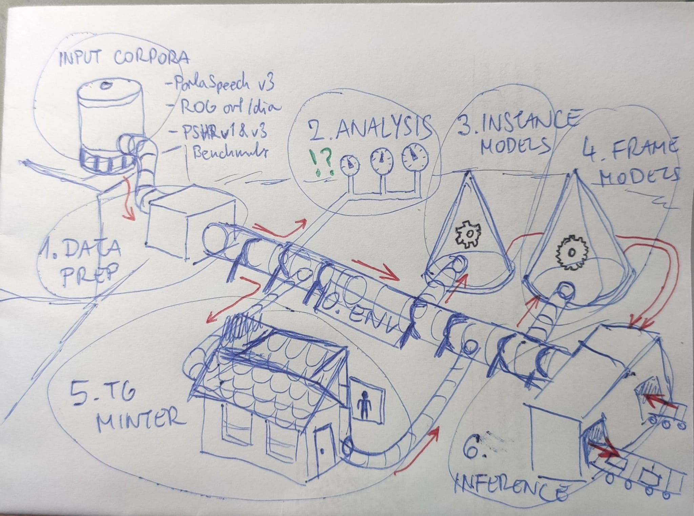
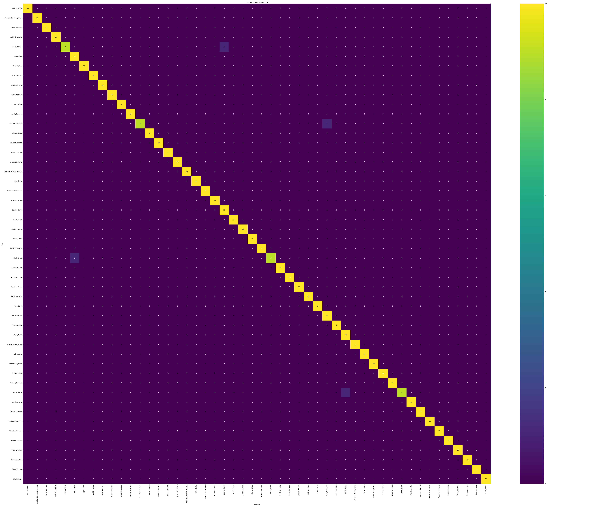
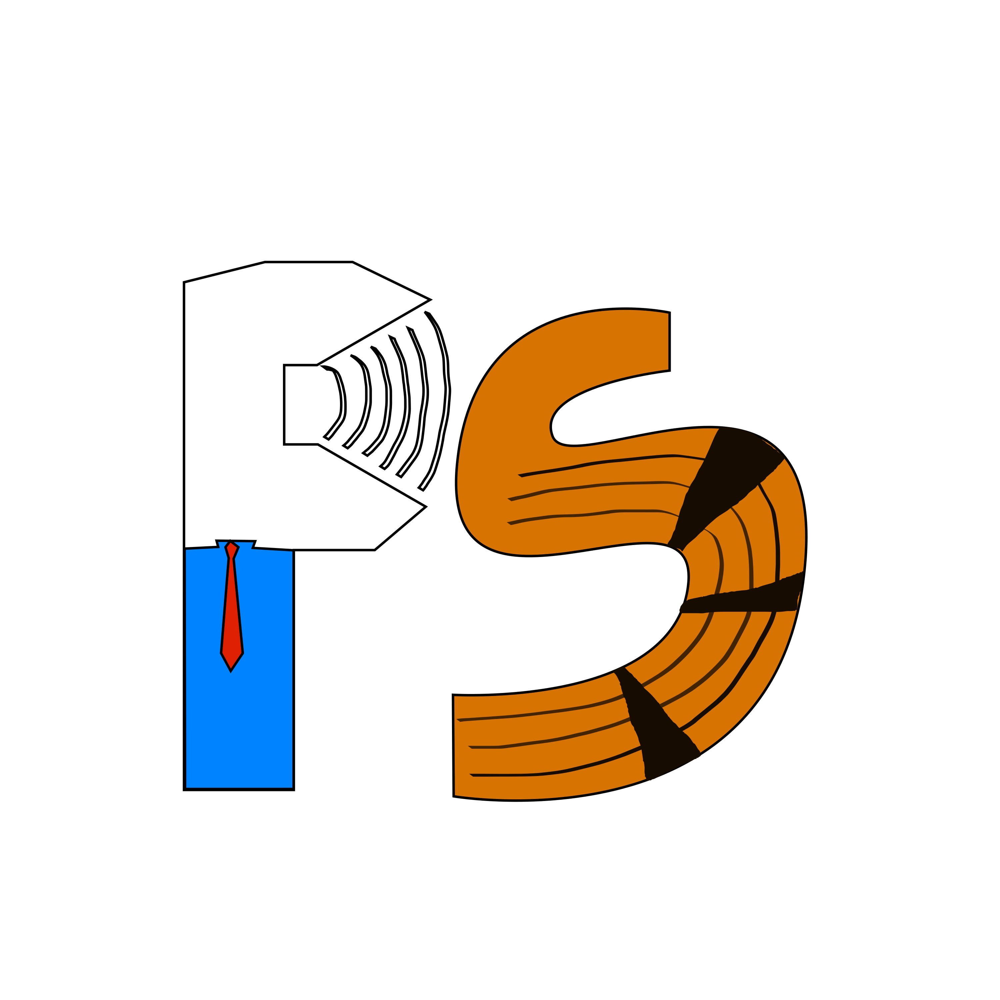

slavic-speech-pipeline a toolkit for training speech models on Slavic speech
The pipeline at a glance
Audio comes in on the left, trained models come out on the right. Chapter numbers above each stage match the numbered folders at the repo root.

What the toolkit produces
Two sample runs from the live chapters. Both plots come straight out of the engine.
Who is speaking? Chapter 3 · instance classification · 50 speakers · wav2vec2-base

Where does the stress land? Chapter 4 · frame classification · classla · w2v-BERT

The chapters audio in → model out
Each chapter is a folder at the repo root, numbered in the order you walk
them. Every chapter ships the same code three ways: .ipynb
(narrated notebook), .py (same logic, headless),
run_<nn>_*.py (one-line shell wrapper). Pick the one
that matches how deep you want to go.
Two Python environments with pinned versions — a CPU one for data chapters, a CUDA one for model chapters.
Pull the Slavic speech corpora and convert each one to a canonical JSONL manifest the rest of the toolkit reads.
Verify the data is correct.
Train a model to answer one question about a whole clip — speaker gender, speaker age, or filled-pause detection.
Train a model that answers the question moment by moment inside a clip — where the filled pause sits, where the primary stress lands.
Round-trip clips through Praat for human annotation, then read the TextGrids back into frame-level JSONL.
Point a trained model at a folder of new audio and get predictions out. Frame-classification path is wired today; other paths are scaffolded.
The guide run it locally · chapter-by-chapter walkthrough
Rather clone the repo and run the real pipeline on your own box? Install
the mamba env and walk the chapters at your own pace. Every entry point
ships three modes — test proves the plumbing in seconds,
demo returns a tangible number in about an hour,
full is for overnight runs.
bash 0_env_setup/setup_env_cuda.sh
mamba activate ssp-cudaThe Under the Hood guide walks every chapter end to end — the exact command for each run, what to expect while it runs, where to tweak the knobs, the hiccups that come up.
Related research
ParlaSpeech is the resource ssp was built against. Each release has grown the corpora, the annotation layers, and the research around them — downstream papers below. ssp folds all of that into one toolkit so new questions can build on the same foundation.
Current research
- Fine-tuning a primary-stress frame model for Slovenian.
- A filled-pause qualitative classifier (vocalic vs nasalic) at the instance level.
Resources

ParlaSpeech 3.0: Richly Annotated Spoken Parliamentary Corpora of Croatian, Czech, Polish, and Serbian
Six thousand hours of parliamentary speech across four Slavic languages. Five automatic annotation layers in the 3.0 release. The corpus bundle Chapter 1 downloads by default.
@misc{ljubesic2025parlaspeech30,
title = {{ParlaSpeech} 3.0: Richly Annotated Spoken Parliamentary
Corpora of Croatian, Czech, Polish, and Serbian},
author = {Ljube{\v{s}}i{\'c}, Nikola and Rupnik, Peter and
Porupski, Ivan and {Kuzman Punger{\v{s}}ek}, Taja},
year = {2025},
eprint = {2511.01619},
archivePrefix = {arXiv},
primaryClass = {cs.CL},
url = {https://arxiv.org/abs/2511.01619}
}
Related papers
Cite the toolkit
@misc{slavic_speech_pipeline_2026,
author = {Porupski, Ivan},
title = {slavic-speech-pipeline: Speech encoders on Slavic speech corpora},
year = {2026},
note = {Jožef Stefan Institute},
url = {https://github.com/porupski/slavic-speech-pipeline}
}